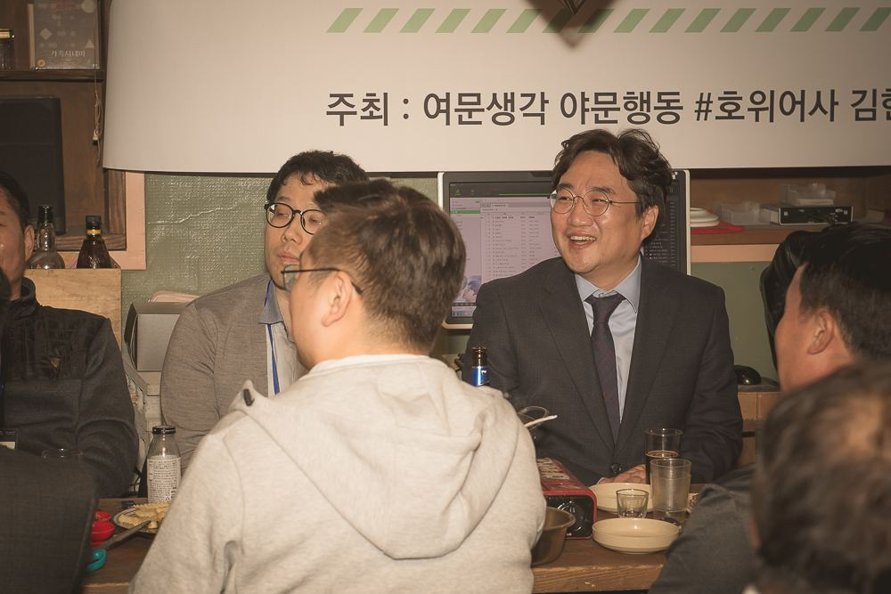
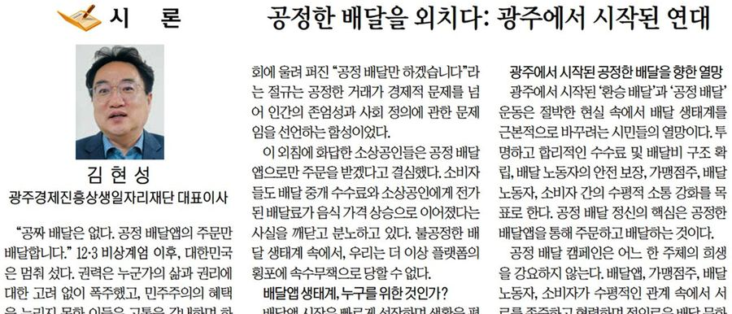
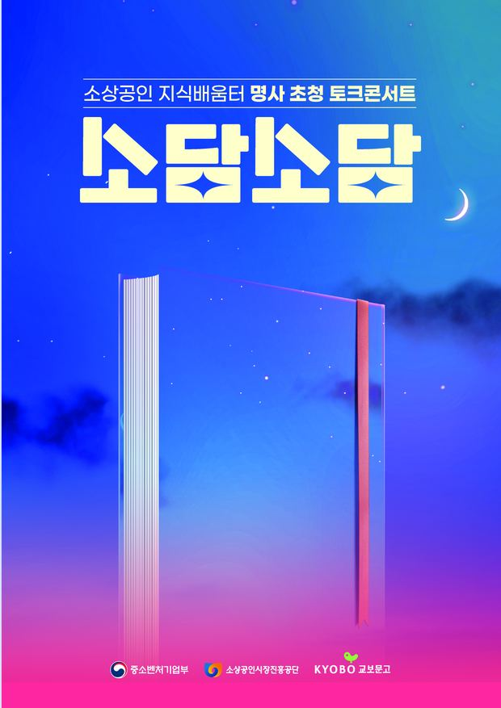

“소버린 AI요? 우린 그런 거 몰라요. 그냥 소(상공인을) 버린 AI가 아니길 바랄 뿐이죠.”
국가 AI 전략 회의를 마치고 들른 가게였다. 사장님의 농담 한 마디가 가슴에 박혔다. 고가도로 위에서는 AI 주권을 말하는데, 그 아래 골목에서는 전혀 다른 언어가 쓰이고 있었다. 한 권의 책은 거기서 시작됐다.

담배를 끊으라고 말하지 않았다. 흡연을 스스로를 해치는 일로 보여줬다. 큰 화제가 됐고 상을 받았다. 메시지를 짓는 법을 여기서 배웠다.
심야에 집에 가지 못하는 사람들이 있었다. 통화 데이터를 뒤져 그들의 길을 찾았다. 데이터가 사람을 향할 때 무엇이 가능한지 처음 증명한 장면.
성급한 말 한 마디로 일이 정치가 됐다. 그 순간은 힘들었다. 제돌이는 결국 바다로 돌아갔다. 실패도 기록해야 레시피가 된다. 자세한 과정은 『물음』에 적었다.
코로나19 한복판, 5만 4천 명의 사장님과 디지털 전환을 함께 건넜다. 소담스퀘어라는 이름을 직접 지었다. 백 마디 이론보다 사장님 이야기 하나가 더 힘이 된다고 믿었다.
1,547명의 사장님이 플랫폼 탈퇴를 선언했다. “못살겠다 갈아타자.” 공공배달앱으로 옮겨 타는 캠페인을 이끌었다. 지역에서 만들고 디지털로 파는 지산D소, QR광주, 2조 7천억 원 규모의 지역 순환 구상도 이때 세웠다.

AI 시대, 소상공인은 버려지는 존재인가. 아니면 역사상 처음으로 주인이 될 기회인가. 이 책은 그 물음에 대한 답이다.
성공담만 적지 않았다. 꺼진 스크린, 실패한 공공앱도 적었다. 류성룡이 패배를 기록했듯이. 그리고 대안을 냈다. 디지털 권리장전 10대 권리와 소무(小務) 10조. 창작이 아니라 발견이다. 이미 어딘가에서 작동하는 정책들이다.
함께 읽을 책 『72년생 김현성의 물음』 · 『넥스트 커머스』(공저)
책에 쓴 말을 행정으로 옮기는 자리. 구청 안에서 AI 전환의 첫 불씨를 놓는다.
공공이 먼저 AI를 부리는 법을 익힌다. 그래야 골목에도 건넬 수 있다.
고가도로 위의 회의실에 골목의 언어를 들고 간다.
그늘 없는 AI 기준국가. 골목에서 나라로, 나라에서 세계로. 담론과 골목 사이에 다리를 놓는 후속작.

소상공인 지식배움터. 소상공인을 버린 AI에서 소상공인이 부리는 AI로.
공공이 먼저 AI를 부려야 골목에 건넬 수 있다.
뜻땀때가 방향이라면, 점선면은 방법이다.
정책은 말로 먼저 도착한다. 광고인으로 시작해 청책과 캠페인으로 시민의 목소리를 정책의 언어로 옮겼다.
600만 사장님의 장부에서 출발한다. 플랫폼 수수료, 공공배달, 수요혁신. 골목의 돈이 골목에서 돌게 한다.
데이터로 심야의 길을 찾고, 키오스크 앞에서 돌아서는 사람을 먼저 본다. 그늘 없는 기술, 무영등의 철학.
답안지가 사라진 시대에는 질문하는 쪽이 기준을 세운다. 소버린 AI와 기준국가, 골목에서 세계의 표준을 짓는다.
기관을 이끌며 배운 것은 혼자 빛나지 않는 법이다. 성과만큼 실패도 기록하고, 다음 사람이 이어 달릴 판을 남긴다.